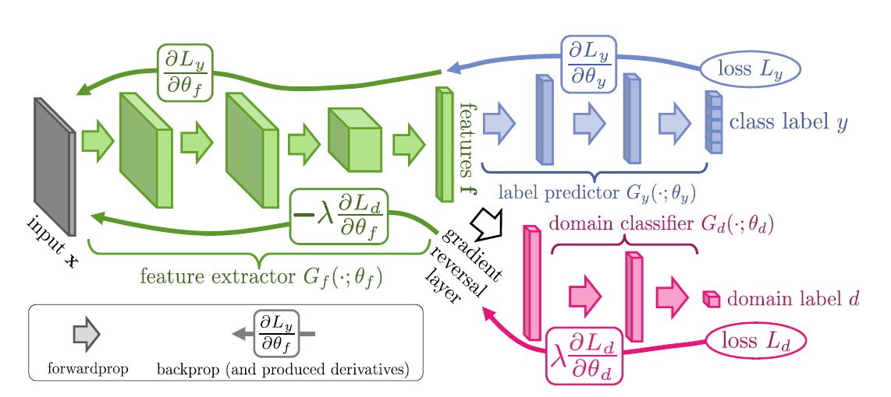

adapt.feature_based.DANN¶
-
class
adapt.feature_based.DANN(encoder=None, task=None, discriminator=None, lambda_=0.1, gamma=10.0, loss='mse', metrics=None, optimizer=None, copy=True, random_state=None)[source]¶ DANN: Discriminative Adversarial Neural Network
DANN is a feature-based domain adaptation method.
The goal of DANN is to find a new representation of the input features in which source and target data could not be distinguished by any discriminator network. This new representation is learned by an encoder network in an adversarial fashion. A task network is learned on the encoded space in parallel to the encoder and discriminator networks.
The three network paremeters are optimized according to the following objectives:
\[\begin{split}\min_{\phi, F} & \; \mathcal{L}_{task}(F(\phi(X_S)), y_S) - \lambda \left( \log(1 - D(\phi(X_S))) + \log(D(\phi(X_T))) \right) \\ \max_{D} & \; \log(1 - D(\phi(X_S))) + \log(D(\phi(X_T)))\end{split}\]Where:
\((X_S, y_S), (X_T)\) are respectively the labeled source data and the unlabeled target data.
\(\phi, F, D\) are respectively the encoder, the task and the discriminator networks
\(\lambda\) is the trade-off parameter.
The adversarial training is done through a reversal gradient layer placed between the encoder and the discriminator networks. This layer inverses the gradient sign in backpropagation, thus the two networks are optimized according to two opposite objective functions.
The method has been originally introduced for unsupervised classification DA but it could be widen to other task in supervised DA straightforwardly.
DANN architecture (source: [1])¶
- Parameters
- encodertensorflow Model (default=None)
Encoder netwok. If
None, a shallow network with 10 neurons and ReLU activation is used as encoder network.- tasktensorflow Model (default=None)
Task netwok. If
None, a two layers network with 10 neurons per layer and ReLU activation is used as task network.- discriminatortensorflow Model (default=None)
Discriminator netwok. If
None, a two layers network with 10 neurons per layer and ReLU activation is used as discriminator network. Note that the output shape of the discriminator should be(None, 1)and asigmoidactivation should be used.- lambda_float or None (default=0.1)
Trade-off parameter. If
None,lambda_increases gradually according to the following formula:lambda_= 2/(1 + exp(-gamma* p)) - 1. With p growing from 0 to 1 during training.- gammafloat (default=10.0)
Increase rate parameter. Give the increase rate of the trade-off parameter if
lambda_is set toNone.- lossstring or tensorflow loss (default=”mse”)
Loss function used for the task.
- metricsdict or list of string or tensorflow metrics (default=None)
Metrics given to the model. If a list is provided, metrics are used on both
taskanddiscriminatoroutputs. To give seperated metrics, please provide a dict of metrics list with"task"and"disc"as keys.- optimizerstring or tensorflow optimizer (default=None)
Optimizer of the model. If
None, the optimizer is set to tf.keras.optimizers.Adam(0.001)- copyboolean (default=True)
Whether to make a copy of
encoder,taskanddiscriminatoror not.- random_stateint (default=None)
Seed of random generator.
References
- 1
[1] Y. Ganin, E. Ustinova, H. Ajakan, P. Germain, H. Larochelle, F. Laviolette, M. Marchand, and V. Lempitsky. “Domain-adversarial training of neural networks”. In JMLR, 2016.
Examples
>>> import numpy as np >>> from adapt.feature_based import DANN >>> np.random.seed(0) >>> Xs = np.concatenate((np.random.random((100, 1)), ... np.zeros((100, 1))), 1) >>> Xt = np.concatenate((np.random.random((100, 1)), ... np.ones((100, 1))), 1) >>> ys = 0.2 * Xs[:, 0] >>> yt = 0.2 * Xt[:, 0] >>> model = DANN(lambda_=0., random_state=0) >>> model.fit(Xs, ys, Xt, yt, epochs=100, verbose=0) >>> model.history_["task_t"][-1] 0.0240... >>> model = DANN(lambda_=0.1, random_state=0) >>> model.fit(Xs, ys, Xt, yt, epochs=100, verbose=0) >>> model.history_["task_t"][-1] 0.0022...
- Attributes
- encoder_tensorflow Model
encoder network.
- task_tensorflow Model
task network.
- discriminator_tensorflow Model
discriminator network.
- model_tensorflow Model
Fitted model: the union of
encoder_,task_anddiscriminator_networks.- history_dict
history of the losses and metrics across the epochs. If
ytis given infitmethod, target metrics and losses are recorded too.
Methods
__init__([encoder, task, discriminator, …])Initialize self.
create_model(inputs_Xs, inputs_Xt)Create model.
fit(Xs, ys, Xt[, yt])Fit Model.
get_loss(inputs_ys, task_src, task_tgt, …)Get loss.
get_metrics(inputs_ys, inputs_yt, task_src, …)Get Metrics.
predict(X)Return predictions of the task network on the encoded features.
predict_disc(X)Return predictions of the discriminator on the encoded features.
Return the encoded features of X.
-
__init__(encoder=None, task=None, discriminator=None, lambda_=0.1, gamma=10.0, loss='mse', metrics=None, optimizer=None, copy=True, random_state=None)[source]¶ Initialize self. See help(type(self)) for accurate signature.
-
create_model(inputs_Xs, inputs_Xt)[source]¶ Create model.
Give the model architecture from the Xs, Xt inputs to the outputs.
- Parameters
- inputs_XsInputLayer
Input layer for Xs entries.
- inputs_XtInputLayer
Input layer for Xt entries.
- Returns
- outputsdict of tf Tensors
Outputs tensors of the model (used to compute the loss).
-
fit(Xs, ys, Xt, yt=None, **fit_params)[source]¶ Fit Model. Note that
fitdoes not reset the model but extend the training.- Parameters
- Xsnumpy array
Source input data.
- ysnumpy array
Source output data.
- Xtnumpy array
Target input data.
- ytnumpy array (default=None)
Target output data. yt is only used for validation metrics.
- fit_paramskey, value arguments
Arguments given to the fit method of the model (epochs, batch_size, callbacks…).
- Returns
- selfreturns an instance of self
-
get_loss(inputs_ys, task_src, task_tgt, disc_src, disc_tgt)[source]¶ Get loss.
- Parameters
- inputs_ysInputLayer
Input layer for ys entries.
- outputsdict of tf Tensors
Model outputs tensors.
- Returns
- losstf Tensor
Model loss
-
get_metrics(inputs_ys, inputs_yt, task_src, task_tgt, disc_src, disc_tgt)[source]¶ Get Metrics.
- Parameters
- inputs_ysInputLayer
Input layer for ys entries.
- inputs_ytInputLayer
Input layer for yt entries.
- outputsdict of tf Tensors
Model outputs tensors.
- Returns
- metricsdict of tf Tensors
Model metrics. dict keys give the name of the metric and dict values give the corresponding Tensor.
-
predict(X)[source]¶ Return predictions of the task network on the encoded features.
- Parameters
- Xarray
input data
- Returns
- y_predarray
predictions of task network